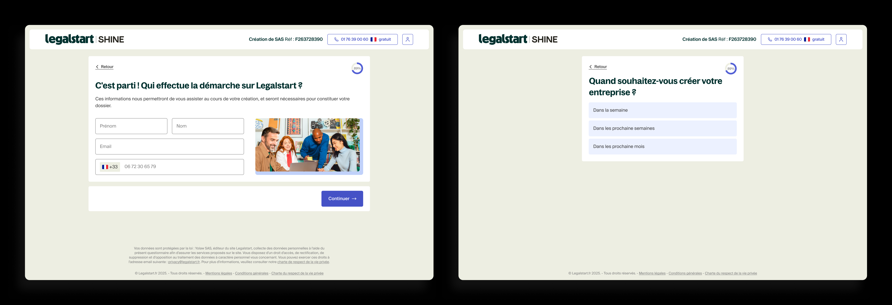
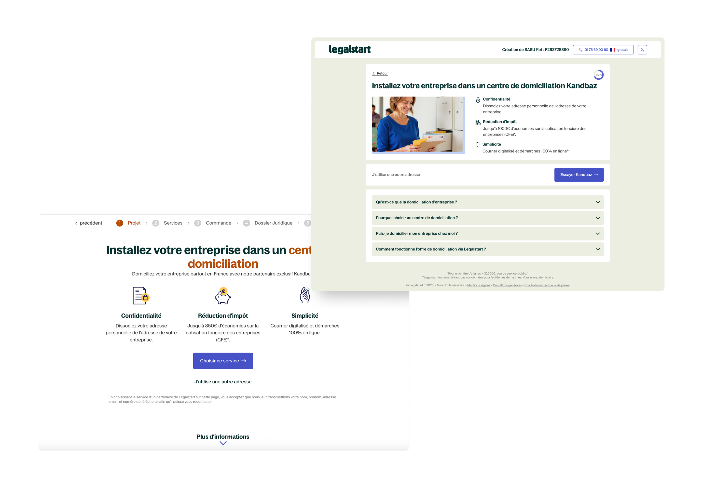

End to end redesign of Legalstart's conversion layer: 15+ funnel flows, 6 cobranded partner integrations, and CRO driven landing pages, all measured through Amplitude and iterated on real data.
Before a user pays for anything on Legalstart, they move through a conversion layer: landing pages, qualifying question funnels, and upsell screens. This section (Lafoy, as it is known internally) is where commercial outcomes are decided. A user who drops off here never becomes a customer. Every percentage point of conversion at this stage has a direct revenue impact at Legalstart's traffic volume.
I was responsible for redesigning this entire layer in parallel with the core product rebranding. The scope was larger than it looked: 15+ distinct funnel types, 7 legal entity structures, 6 cobranded partner integrations, and several landing pages, each with its own user intent, content requirements, and drop off risk profile.
The existing funnels had been built incrementally, each one created to solve an immediate need without a shared design logic. The result was inconsistency: some funnels led with outcomes, others buried them under feature lists. Trust signals appeared at the top of the page where users were not yet hesitating, and were absent at the bottom where they were. Forms asked for too much at once.
The cobranded funnels added a layer of complexity: each partner had brand guidelines that had to be respected, but the conversion logic could not be sacrificed for brand compliance. Keeping both was not a visual problem. It was a structural one.
Audit first. For each funnel, I simulated the full user journey to understand where users dropped off and why. The patterns were consistent across funnel types: pages led with what the product does rather than what the user gets, trust signals were placed decoratively rather than strategically, and form steps asked too many questions at once, overwhelming users at the exact moment they needed to feel confident.
Design principles as decision tools. Rather than applying a different logic to each funnel, I developed four principles that guided every design choice across all 15+ flows: lead with what the user gets (not what the product does); place trust signals where users hesitate, not where they first arrive; reduce cognitive load at the decision moment by asking less at once; design mobile hierarchy first and expand to desktop from there. These were not abstract values. They were applied to specific choices at every screen.
Template driven execution. Once the principles were established, I rebuilt each funnel using the page template system developed during the service rebranding. This meant consistency was structural, not dependent on checking each screen individually. Future updates to any funnel (new copy, new legal structure, new partner) could be made without starting from scratch.
A significant portion of the work was the cobranded funnel system: entry points from partner platforms that carry both the partner's identity and Legalstart's. Six partners, multiple legal structures each. The design challenge: keeping the conversion logic intact while respecting external brand guidelines that sometimes pulled in a different direction.
The solution was structural rather than visual. I designed the templates so that the UX scaffold (CTA placement, trust signal positioning, progressive disclosure logic) was fixed. The partner branding operated at the visual layer on top of that: colours, headers, cobranded assets. The result was funnels that felt on brand for each partner while behaving consistently for conversion.

Example of cobranded funnel pages built with Shine, showing how partner branding integrates with the shared UX template.
On most existing pages, trust elements (review counts, badges, expert availability) were placed at the top of the page as a credibility signal. User research showed hesitation happens much later: just before the form entry, just before the CTA. Repositioning trust signals to appear at those moments (not at the top) had a measurable impact on conversion. The placement logic mattered more than the signals themselves.
Multi field forms on a single screen were a consistent drop off point. Breaking them into single field steps with contextual microcopy explaining why each piece of information was needed reduced perceived effort at the moment users were most likely to leave. The design principle: the right amount of information is the minimum needed to make a confident decision at that step, nothing more.
Pricing cards above the fold were too dense. Users could not extract the three things that actually drive a decision (price, key benefit, and social proof) without reading everything. The redesign surfaced exactly those three elements first and pushed secondary detail below an expansion. A small structural change, but one that addressed a real comprehension failure at a high stakes moment in the funnel.

Side by side comparison of the old funnel design (left) and the redesign (right), showing changes in hierarchy, trust signals, and CTA structure.
A 2% average conversion lift across 15+ funnels represents commercially meaningful revenue at Legalstart's traffic volume. These are tracked production outcomes, not projected estimates. The cobranded template system also means future partner integrations can be built without a full redesign. The structural work is already in place.
Conversion work taught me something that is easy to miss from a design perspective: the most impactful changes are often invisible in a design review. Moving a trust signal 200px down the page, changing a CTA label, splitting a form in two. None of these look like significant decisions in Figma. They only become significant in the data. The skill is knowing which small change matters, and that comes from understanding what users are thinking at each step of the funnel, not just what they are seeing.
The cobranded work was the most structurally interesting challenge. Managing six different external brand identities while keeping the conversion logic consistent forced a clear separation between what is structural (UX, which is fixed) and what is visual (branding, which varies). That distinction (structure is fixed, surface is flexible) is something I would apply to any design system problem.